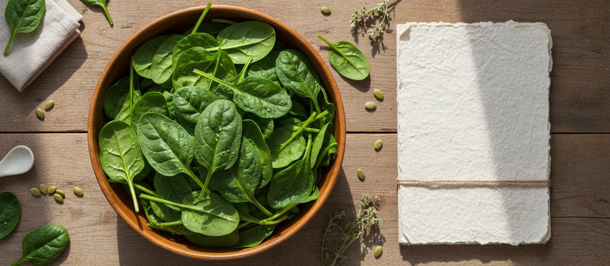
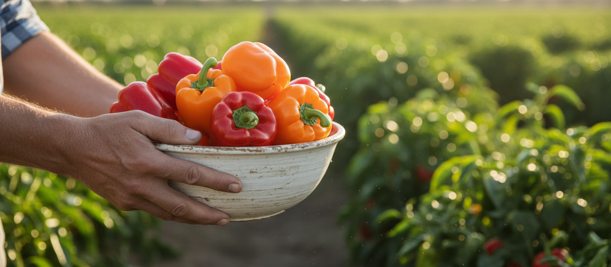

바른먹거리 원칙
Wholesome Food Principles
내 가족의 건강과 행복을 위한 바른먹거리.
“풀무원을 만드는 사람들,
바른 마음으로 정직하게 만듭니다.
까다롭지만 원칙을 지켜 만듭니다.”
많은 시를 담은 이 글은 풀무원 최초의 캠페인 기업 이미지 광고 속에 조용히 깔렸던 내레이션입니다.
그래도 지금도 풀무원은 내 가족의 건강과 행복을 위한 바른먹거리를 위해
엄격한 원칙들을 스스로 만들어 지켜오고 있습니다.
달라지는 현대인의 식문화에 맞춰 함께 변해가는 풀무원 바른먹거리의 원칙.
그 기본이 되는 영양균형은 물론 지구와 공존하기 위한 친환경 태도,
까다롭고 투명한 첨가물원칙과 클린라벨로 풀무원 바른먹거리가 한 발 더 나아갑니다.
바른먹거리 원칙
나와 지구를 위한 풀무원 바른먹거리 원칙
Nutrition Balance
영양균형을 고려한 식단을 지향하고, 제품을 만듭니다.
Eco Caring
환경을 생각한 제조과정과 사업장 설계, 포장원칙을 준수합니다.
Clean Label
엄격한 관리기준을 통해 인공 첨가물 배제 노력을 지속하고 원료 정보를 투명하게 공개합니다.
나를 위해. 지구를 위해.
식품이력제
바른먹거리를 위한 풀무원의 또 하나의 약속, 식품이력제

두부, 달걀, 김, 생수 제품의 QR코드를 찍어보세요. 산지에서 제조까지, 바른먹거리가 만들어지는 과정이 투명하게 공개됩니다.
안전한 먹거리를 위해 더 다양한 풀무원 제품들의 생산 이력을 차근차근 공개해 나갈 계획입니다.